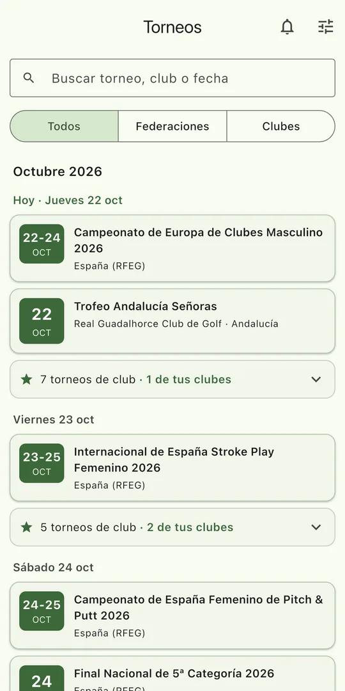
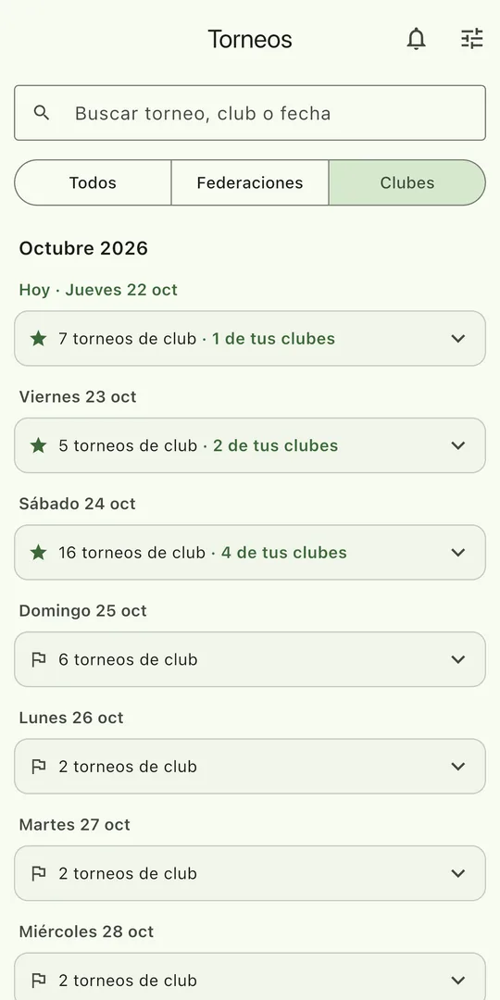
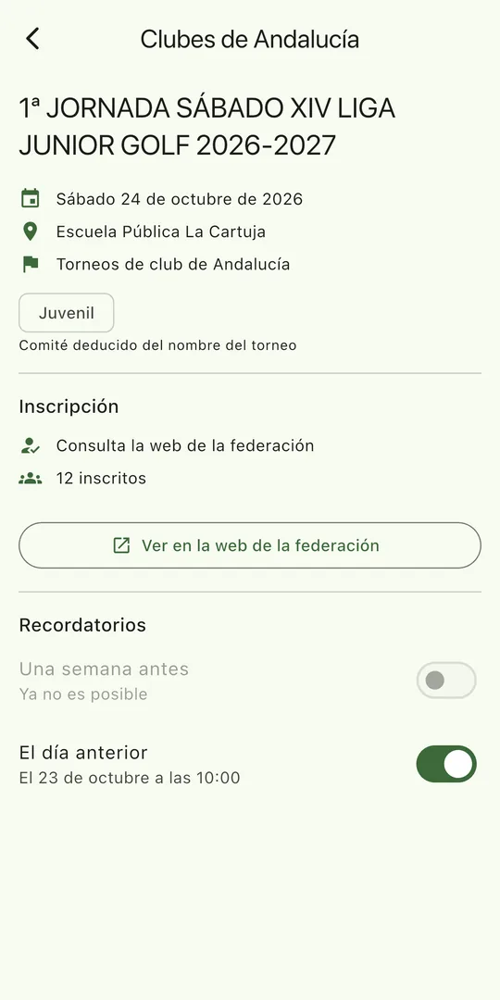
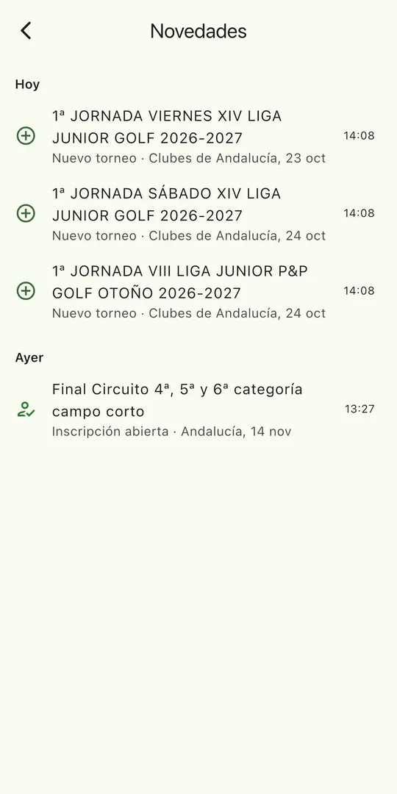

Todos los torneos en un sitio
Consulta en un solo calendario lo que publican la RFEG y cada federación, sin ir web por web. Busca por nombre o por club y filtra por comité: masculino, femenino, juvenil, sénior, pitch & putt, profesionales o adaptado.
Avisos de lo que te interesa
Recibe una notificación cuando se publica un torneo nuevo, se abre una inscripción o se cancela una prueba de tus federaciones y comités. Nada de avisos de madrugada.
Recordatorios a tu hora
Marca los torneos que no quieres perderte y la app te recuerda la semana antes, el día anterior y el cierre de la inscripción, a la hora que elijas.
Así es HuGolf
-

Todos los torneos de tus federaciones, día a día.
-

Los torneos de club, con tus clubes destacados.
-

Cada torneo enlaza a su web oficial, donde te inscribes.
-

Novedades y avisos de lo que te interesa.
Qué federaciones incluye
Real Federación Española de Golf, Andalucía, Madrid, Región de Murcia, Castilla y León, Castilla-La Mancha, Navarra, País Vasco, Cataluña, Comunidad Valenciana y el Circuito MAJ. Iremos añadiendo el resto de comunidades.
HuGolf es una app independiente y no está vinculada a ninguna federación. Los datos de los torneos proceden de la información que publica cada federación en su web, y la inscripción se hace siempre en la web oficial de cada torneo.